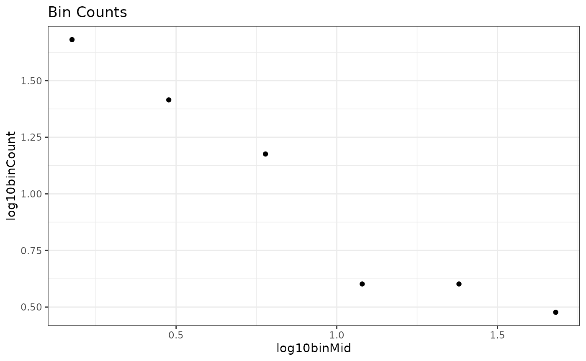
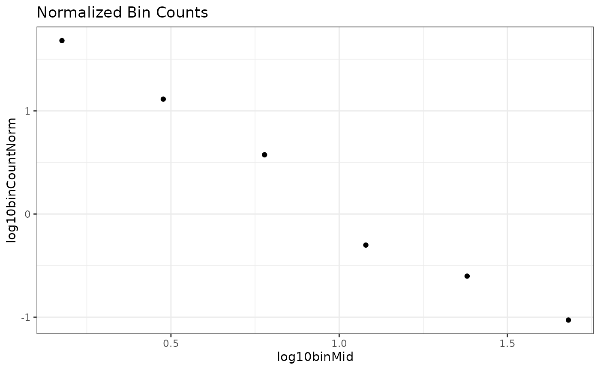

OLS-binning
OLS-binning.RmdIntroduction
Lot’s of previous research in size spectra or individual size distributions first bins the data and then performs an ordinary least squares (OLS) linear regression with x being the midpoint of each bin, and y being the count of individuals in each bin.
One of the issues with binning is you first need to decide the size of the bin. Linear bin widths have been used, but generally bins on a logarithmic scale are chosen.
Here, I will use log2 bin widths. This is an octave scale where each successive bin is twice the size of the previous one. For example, if the first bin is from 1-2, the second bin will be from 2-4, following bins will be 4-8, 8-16, etc.
A second choice to make is whether or not to “normalize” the data. The bins are not equal widths and to account for that the count in the bin is often transformed be dividing by the width of the bin.
We will use the binData() function from
sizeSpectra. Conveniently, this has a built in argument for
using log2 bins, and also calculates the regular and
“normalized” counts so we can compare them below.
Data Simulation
Let’s start off by simulating a vector of body size data. I first set the seed to make these reproducible. This creates the same data as our first example in the MLE tutorial.
binData()
x_binned <- binData(m2, binWidth = "2k")x_binned is a list with two parts, the original body
sizes (x_binned$indiv) with information on the bin it was
placed in and all the binned information
(x_binned$binVals).
head(x_binned$indiv)
#> x binMid binMin binMax
#> 1 1.202709 1.5 1 2
#> 2 26.192331 24.0 16 32
#> 3 1.257296 1.5 1 2
#> 4 2.097940 3.0 2 4
#> 5 2.128986 3.0 2 4
#> 6 7.700765 6.0 4 8We are going to be working with the full binned data, so I’m going to save that as a new object for simplicity.
bin_vals <- x_binned$binVals
bin_vals
#> # A tibble: 6 × 13
#> binMid binMin binMax binWidth binCount binCountNorm binSum binSumNorm
#> <dbl> <dbl> <dbl> <dbl> <int> <dbl> <dbl> <dbl>
#> 1 1.5 1 2 1 48 48 68.6 68.6
#> 2 3 2 4 2 26 13 75.1 37.6
#> 3 6 4 8 4 15 3.75 87.0 21.8
#> 4 12 8 16 8 4 0.5 41.0 5.13
#> 5 24 16 32 16 4 0.25 99.5 6.22
#> 6 48 32 64 32 3 0.0938 109. 3.41
#> # ℹ 5 more variables: log10binMid <dbl>, log10binCount <dbl>,
#> # log10binSum <dbl>, log10binCountNorm <dbl>, log10binSumNorm <dbl>Likewise, we are only going to use a few of the columns in this data, so I will simplify it here.
bin_vals <- bin_vals %>%
select(log10binMid, log10binCount, log10binCountNorm)
bin_vals
#> # A tibble: 6 × 3
#> log10binMid log10binCount log10binCountNorm
#> <dbl> <dbl> <dbl>
#> 1 0.176 1.68 1.68
#> 2 0.477 1.41 1.11
#> 3 0.778 1.18 0.574
#> 4 1.08 0.602 -0.301
#> 5 1.38 0.602 -0.602
#> 6 1.68 0.477 -1.03Let’s plot them to see what they look like
ggplot(bin_vals,
aes(x = log10binMid,
y = log10binCount)) +
geom_point() +
theme_bw() +
labs(title = "Bin Counts")
ggplot(bin_vals,
aes(x = log10binMid,
y = log10binCountNorm)) +
geom_point() +
theme_bw() +
labs(title = "Normalized Bin Counts") Not a drastic change, but we can see the third from the last point comes “up” a little bit and the data looks more linear. Indeed, this is the primary reason that normalization has been recommended in the past.
OLS Regression
Let’s fit some simple linear models and extract the slope estimates (often represented with \(\beta_1\))
Original counts
lm_count <- lm(log10binCount ~ log10binMid, data = bin_vals)
coef(lm_count)
#> (Intercept) log10binMid
#> 1.7884753 -0.8573774
confint(lm_count)
#> 2.5 % 97.5 %
#> (Intercept) 1.434875 2.1420754
#> log10binMid -1.190499 -0.5242556Here, the (Intercept) is \(\beta_0\) and log10binMid is
the \(\beta_1\) or slope estimate.
Normalized counts
lm_normal <- lm(log10binCountNorm ~ log10binMid, data = bin_vals)
coef(lm_normal)
#> (Intercept) log10binMid
#> 1.964567 -1.857377
confint(lm_normal)
#> 2.5 % 97.5 %
#> (Intercept) 1.610966 2.318167
#> log10binMid -2.190499 -1.524256OLS estimates:
* Count = \(\beta_{1} = -0.857\) and
95% CI $(-1.19 -0.524)
- Normalized = \(\beta_{1} = -1.857\) and 95% CI $(-2.19, -1.524)
Note that the normalized result shifts the estimate by a value of -1. This is also consistent across methods; Normalizing binned data results in an estimate that is shifted by -1.
I personally think that this is where a lot of confusion has come in from previous studies. The OLS count method is actually estimating \(\lambda + 1\) so you have to subtract one from your estimate to get \(\lambda\). Whereas the estimate from normalized data is actually estimating \(\lambda\) directly. See table 1 in Sprules and Barth (2016) and table 2 in Edwards et al. (2017; but note that they use \(b\) instead of \(\lambda\))
Comparing with known value
So, after converting the OLS count estimate above, both the OLS methods give us an estimated \(\lambda\) of -1.87. Recall that we simulated data from a known lambda of -2. Let’s compare it with the MLE estimate
calcLike(
negLL.fn = negLL.PLB, # continuous estimates of all individuals
x = m2, # the vector of data
xmin = min(m2), # the minimum body size
xmax = max(m2), # the maximum body size
n = length(m2), # the number of observations
sumlogx = sum(log(m2)), # sum of log-transformed data
p = -1.5) # starting point, arbitrary number
#> $MLE
#> [1] -1.871733
#>
#> $conf
#> [1] -2.111733 -1.647733In this case, the estimates are nearly identical but the confidence intervals are smaller for the MLE method.
But you may also recall that the sample size for this example was
only 100. What happens if we use a larger sample size of
n = 1000?
set.seed(598) # makes simulation reproducible
m2_large <- rPLB(n = 100, b = -2, xmin = 1, xmax = 1000)
x_binned_large <- binData(m2_large, binWidth = "2k")
bin_vals_large <- x_binned_large$binVals %>%
select(log10binMid, log10binCount, log10binCountNorm)
lm_count <- lm(log10binCountNorm ~ log10binMid, data = bin_vals_large)
coef(lm_count)
#> (Intercept) log10binMid
#> 1.935255 -1.824274
confint(lm_count)
#> 2.5 % 97.5 %
#> (Intercept) 1.353673 2.516837
#> log10binMid -2.372174 -1.276373
calcLike(
negLL.fn = negLL.PLB,
x = m2_large,
xmin = min(m2_large),
xmax = max(m2_large),
n = length(m2_large),
sumlogx = sum(log(m2_large)),
p = -1.5)
#> $MLE
#> [1] -1.87256
#>
#> $conf
#> [1] -2.09856 -1.66356In this specific example, the estimate from the normalized OLS method actually got worse (lower estimate; wider CI) whereas the MLE estimate was essentially the same but with a narrower CI (and the tru value is still inside the CI).
For a more thorough and robust comparison of how the results for identical, simulated data sets vary when using three methods (MLE, L2n and ELn) across a hypothetical environmental gradient, see Pomeranz et al. 2024